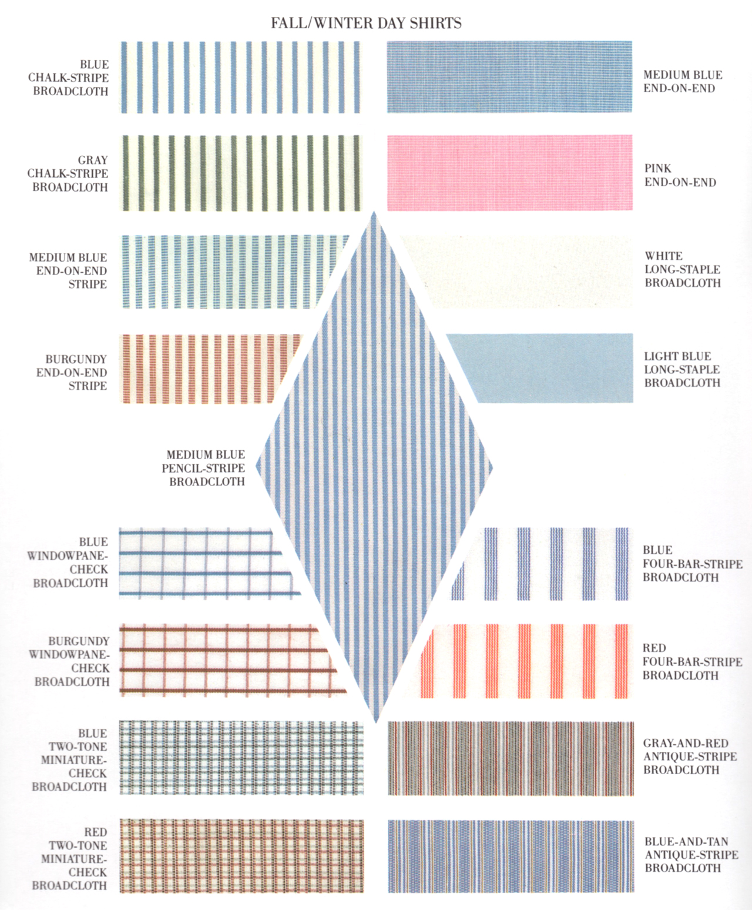

Men's style guidelines from 1708 Lafayette.
Suits
How a Suit Should Fit
Common Features of a Suit
Custom Suit Vendors
Indochino
A Tailored Suit
DIY
How to Iron
Shirts
Tailoring Shirts 1
Tailoring Shirts 2
Ties
Pocket Squares
Belts
Guide 1 (Primer)
Guide 2 (reddit)
Style Guides
MFA Dress Chart
GQ Business Casual
Style Cheat Sheet
Fall/Winter Day Shirts
Dress for your skin tone
How Pants Should Fit
The Goods
10 Best Stores
Affordable Essentials
Clothing Archive
Misc
Shoelace Guide
Going Sockless
No Poo
Resources
About

Back to top